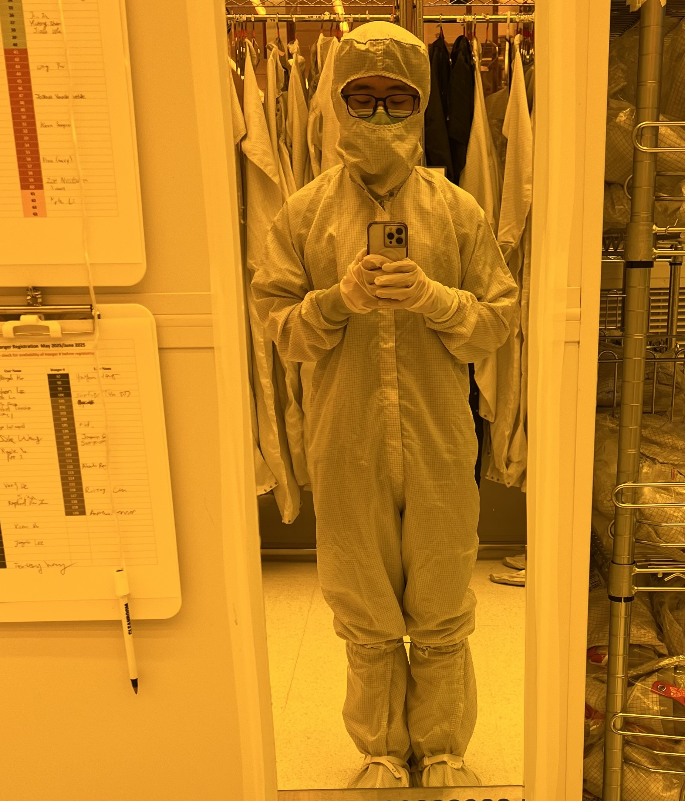
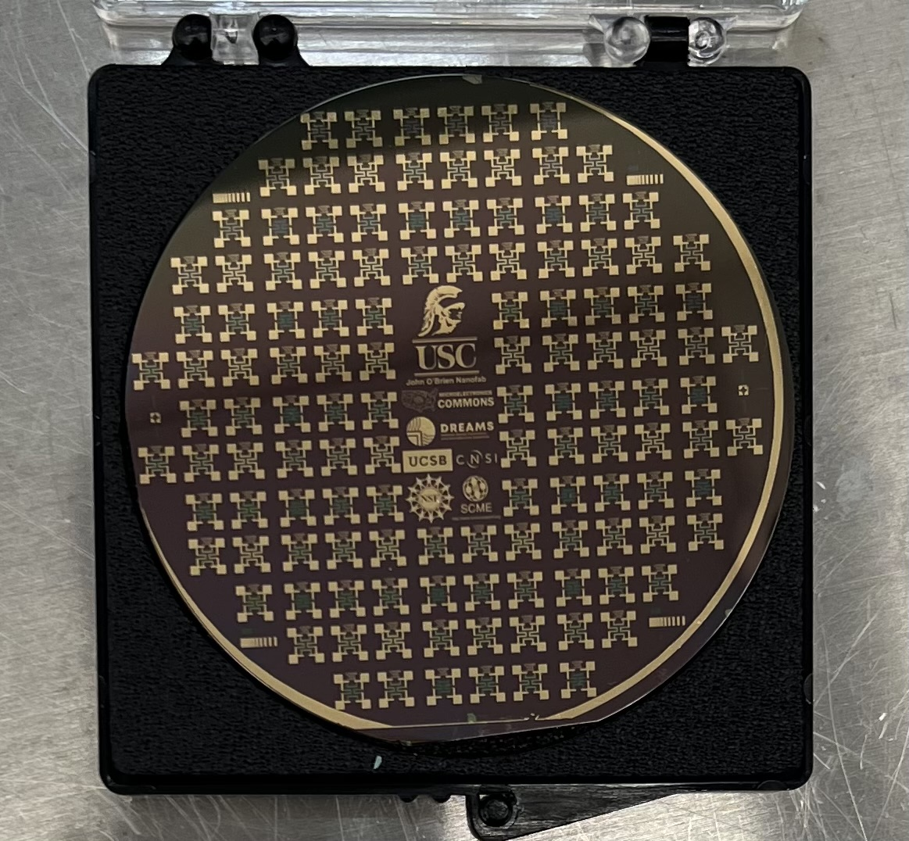
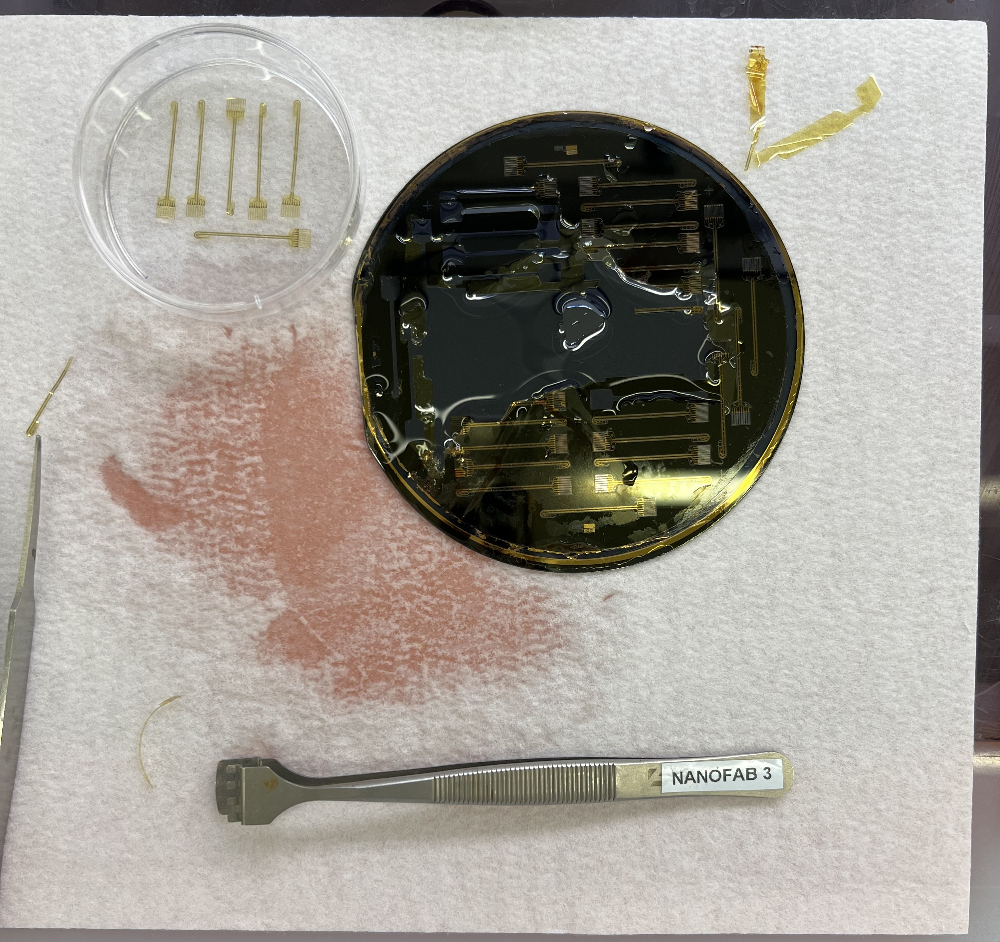

Me in a bunny suit getting ready to enter the cleanroom.

Pressure sensor fabricated using photolithography, HF etching, and e-beam evaporation of gold and chromium.

Neural probe removal from silicon wafer with acetone. Fabrication involved photolithography, spin coating of polyimide,
KOH wet etching, dry etching, and e-beam evaporation of gold and chromium. This MEMS device was developed by the USC Biomedical Microsystems Lab.